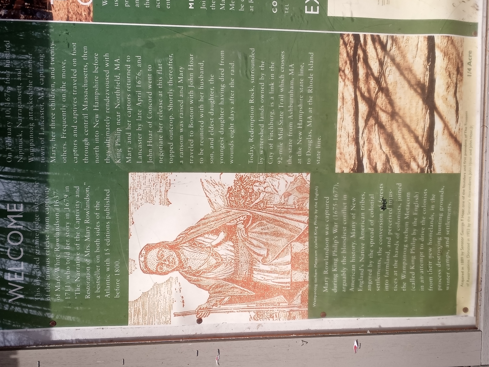

Redemption Rock is a hiking trail near Leominster state Forest in Princeton, MA. Upon entering the hiking trail, you will see a sign with some of the history associated with this rock.
The Midstate Trail passes right through Redemption Rock, so you can choose which way to go I have yet taken the other path, but the one I did take was beautiful and felt so serene!